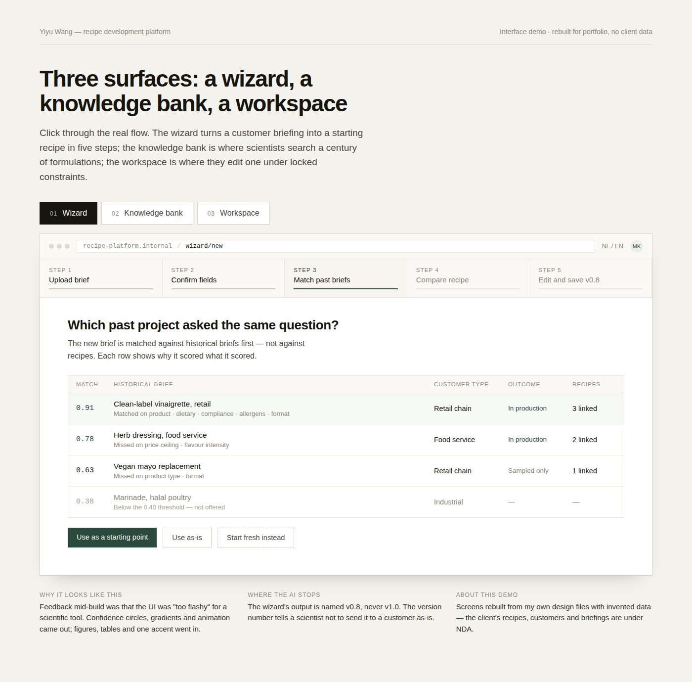
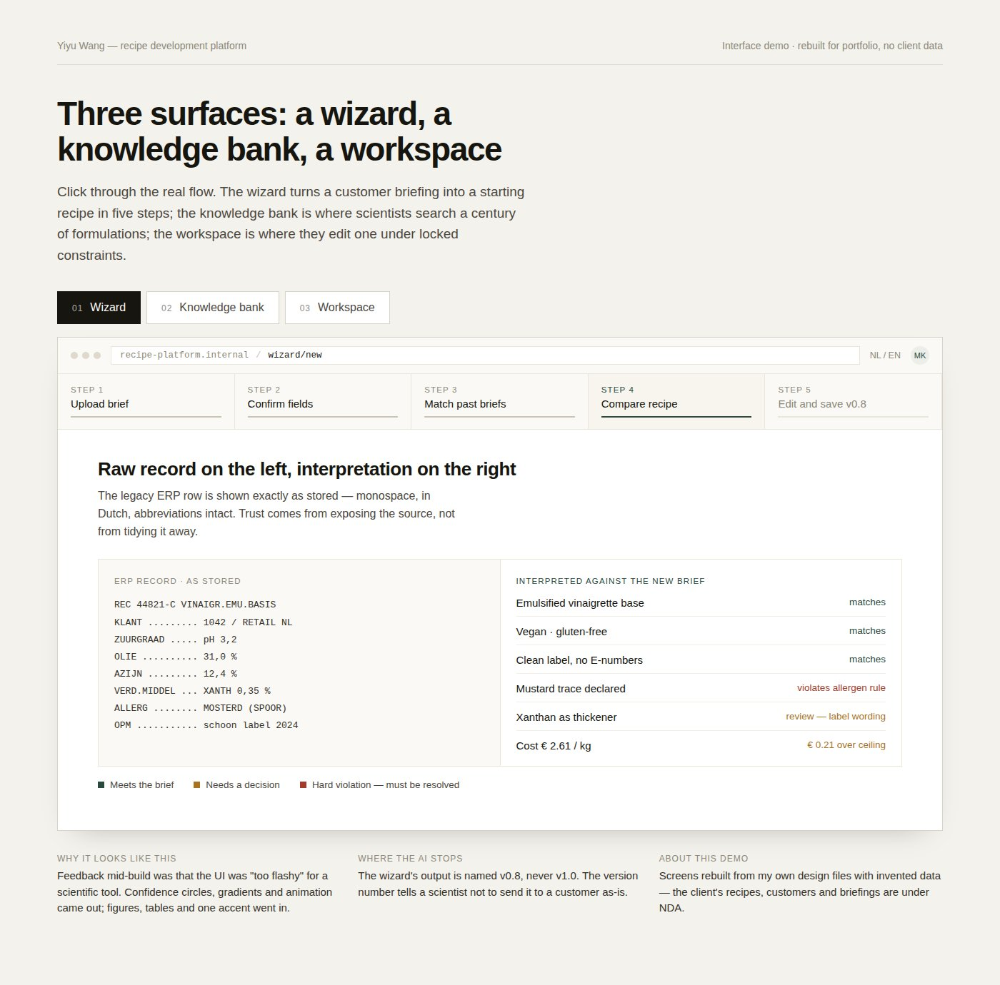
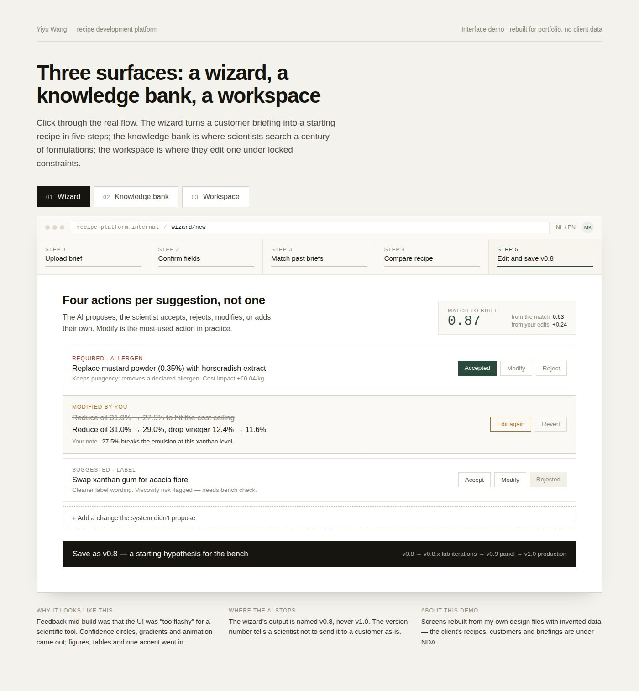
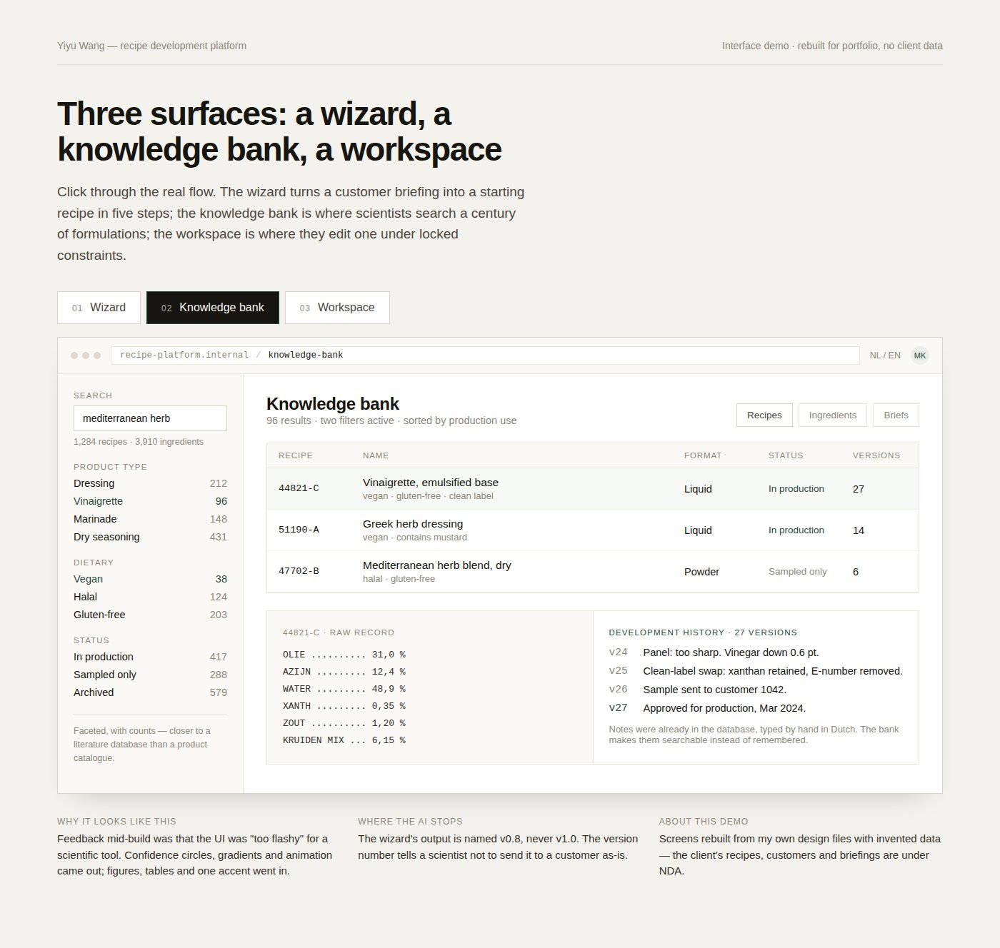
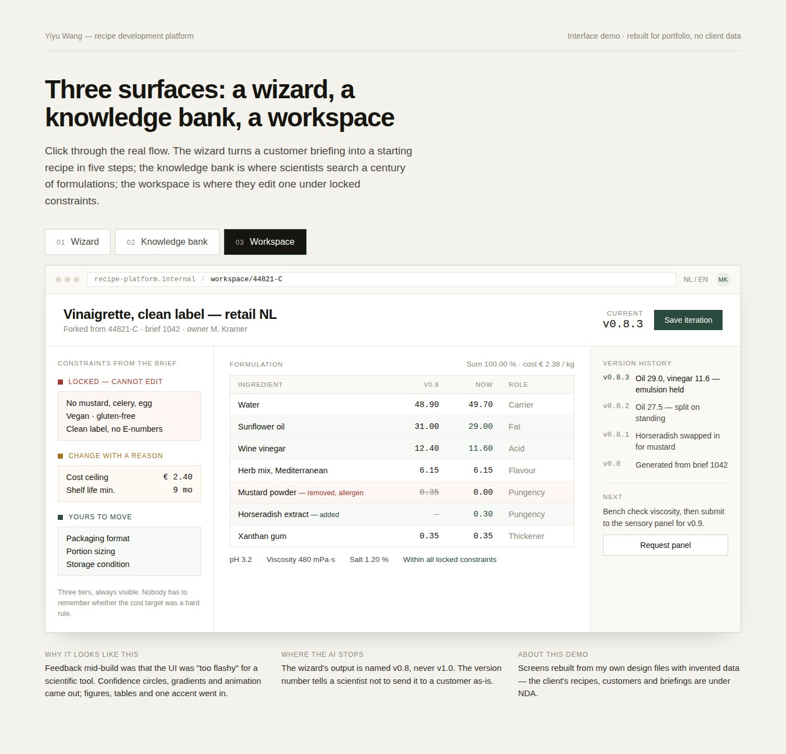

Case study · Product design & frontendYiyu Wang · 2026
Designing a recipe-development platform that starts where scientists actually start
An AI-assisted workflow for food scientists at a 125-year-old European seasonings manufacturer — replacing a long-running spreadsheet-and-tribal-knowledge process. Worked as design lead and frontend engineer at Cumlaude.ai, in partnership with a backend developer and four embedded users.
The brief sounded straightforward: build an AI tool that helps food scientists develop new recipes faster. The first proposal mirrored that framing — a form to fill, then recipes come out. Within six weeks, the architecture had been rebuilt around a different question: what do food scientists actually do when a new customer briefing lands on their desk? They don't fill forms. They search for similar past projects, find a recipe that mostly works, and modify it. The platform that shipped reflects that.
This case study walks through the research approach behind that pivot, the architecture decisions it produced, and the design discipline that emerged from working closely with two food scientists and two business stakeholders across cross-functional reviews.
§ 01 The world
How a spice blend gets born
A brief lands in a scientist's inbox on a Tuesday morning. A snack brand wants a smoky paprika seasoning for a new chip line. The document is three pages: target market, cost ceiling, allergen list, dietary requirements, clean-label commitments, and a paragraph on the flavour direction — "warm heat, roasted notes, familiar rather than novel."
What happens next is not what most people imagine when they hear "food scientist." The scientist does not walk to a lab bench and start mixing spices. She opens her email archive. She searches through folders of past projects, downloaded briefs, and Excel sheets. She thinks: we did a smoky paprika for a competitor two years ago — what was that customer, what did we use as the base, why did it get rejected the first round? She messages a colleague who has been in R&D for fifteen years: do you remember the pepper blend we made for that Belgian retailer? Was that the one where we swapped in the Hungarian paprika? The colleague replies within the hour with a recipe code, some pointers on what to change, and the caveat that the customer originally wanted it hotter than they eventually accepted.
This is the surprising part of the job. Creating a new spice blend is not primarily a creative act — it is a compliance problem, a supply-chain problem, and a market problem, with flavour on top. The goal of R&D is to launch a product a customer will pay for, that the supply chain can deliver, and that regulators will approve. Every new blend satisfies a stack of hard constraints before flavour enters the conversation. That is why scientists start from something similar that already launched: a recipe that has survived the compliance and supply-chain gauntlet is enormously more valuable than a blank slate.
Somewhere in this company's archives — across the ERP database, shared drives, personal folders, tasting notes stapled into old lab books — is the answer to almost every new brief that comes in. Finding it depends on knowing where to look, and knowing where to look depends on the scientist who happens to remember. Food scientists at this manufacturer spend hours reconstructing past work from scattered emails, spreadsheets, and personal memory instead of iterating on new recipes — because their institutional knowledge base is everywhere but not in one place. That is the problem this platform was designed to solve.
§ 02 The problem
A 125-year knowledge base, accessed by memory and spreadsheet
The scale of the archive is the reason the search matters. This client is a top-three European seasonings manufacturer, serving food brands in over sixty countries, with 125 years of accumulated recipe development behind them. The R&D team's asset is not any single formulation — it is the pattern library of thousands of blends that have survived compliance, supply chain, and market. That library lives in three places: a legacy ERP database with thousands of recipe records, the personal experience of individual scientists, and a long tail of spreadsheets, emails, and tasting notes.
The process works — but it depends entirely on individual recall. Junior developers don't have it. Knowledge walks out the door when scientists leave. Every new project starts from a search that is essentially a memory query, not a database query.
"R&D developers don't start from scratch. They search for similar existing recipes first, then decide whether to use as-is or customise."
That single insight, which arrived in the second week of research, became the load-bearing principle for the entire platform. It also forced a pivot away from the first design.
§ 03 The design frame
Automating the search, not the science
The build could have gone in two directions: automate the whole workflow, or automate the friction. We chose the second. The platform behaves as a lab assistant — it does the work of finding, reading, and comparing that scientists were doing manually, and it hands back the point at which real scientific judgment starts. Everything downstream is theirs. This frame decided nearly every subsequent design choice.
What the old workflow did well
The workflow worked. It just worked in the memory of the people doing it. Three things about it were worth preserving. First, the reuse pattern: scientists find similar past projects and modify — they don't start blank. Second, the iteration practice: recipes accumulate version notes that carry sensory observations, ingredient swaps with rationale, customer feedback, sample-shipment markers. Third, human judgment as the final layer: flavour direction, market fit, and lab-bench viability are all called by the scientist. These are what makes the work work — not what makes it hard.
Where it broke
The workflow depends entirely on individual recall. Junior developers don't have it. Knowledge walks out the door when experienced scientists leave. And every new project starts from a search that is essentially a memory query: do you remember the pepper blend we made for that Belgian retailer? The tools scientists already used — a legacy ERP with thousands of recipes, a project-intake system, a long tail of shared drives and emails — held the answers. Finding them required knowing where to look.
What to keep, what to automate, what to redesign
Kept as-is: the modify-existing-recipe workflow, the version-annotation practice, human judgment on flavour and market fit. The platform's structure mirrors these — it does not propose an alternative way of working.
Automated: the search across scattered sources, the extraction of structured fields from PDF briefs, and the ranking of past projects by how well they match the new brief. This is memory work, not scientific work. Scientists can do it — they just shouldn't have to.
Redesigned: the interface where scientists meet AI output. This was the hardest choice. The natural design would be "AI reads brief, AI returns recipe" — one input, one output. What shipped instead is a step-by-step surface where the AI proposes and the scientist decides, with four actions available per suggestion: accept, reject, modify, add. The change came from reading the client's own recipe database.
One cheese-sauce recipe in the archive had twenty-seven versions across several years, each carrying a note like this:
Version
Note (paraphrased)
v1
Too sour, pH 2.5 — appearance fine
v2
Vinegar reduced, citrus concentrate down, sugar up
v3
Customer asked for clean label, no added sugar. Thickener and salt too high. pH 3.2
v4
Sample sent to customer for evaluation
Hundreds of recipes carry this kind of trail. Scientists were already iterating exactly the way the platform would eventually model — proposing a change, deciding whether it worked, noting why, moving on. They just didn't have a structure for it. The platform's job wasn't to teach them a new way of working. It was to formalise the practice already in the database — and to keep the scientist, not the model, at the centre of every decision.
Methodology note. This diagnostic came from workflow archaeology — reading the client's own recipe database and their two existing internal systems alongside recurring cross-functional review with two food scientists and two business leaders. The written research plan was a five-thread structure across desk research, competitive analysis of internal tools, knowledge-base archaeology, technical evaluation of matching architectures, and embedded review. In practice, the archaeology and the embedded review carried most of the weight. Where the research was weaker: a more structured first-conversation round before the first proposal would have caught the form-first framing earlier.
§ 04 The platform
Three surfaces: a wizard, a knowledge bank, a workspace
Everything above this section is diagnosis. This is what shipped. The platform organises around three surfaces — one for turning a new brief into a starting recipe, one for searching a century of past formulations, one for iterating on a v0.8 draft under locked constraints. Each surface does a specific piece of the workflow described in § 03; together they cover the memory-and-search work that used to live in scientists' heads.
Click throughOpen the interactive demo →Screens rebuilt for portfolio with invented data. Client formulations are under NDA.
01 · Wizard
From customer brief to a starting recipe, in five steps
The wizard is the platform's opening screen — where the memory-and-search work happens. A scientist drops a customer briefing PDF into the upload zone; the AI extracts about fifty structured fields; the scientist confirms what the AI read, with per-field confidence numbers visible so nothing is silently accepted. Then the platform ranks past briefs by how well they match the new one, and the scientist picks one to start from. The output is a recipe v0.8 — deliberately not v1.0 — ready to take to the lab bench.
Three moments in the wizard carry most of the design weight.
Match past briefs, ranked by why. The system does not return "recipes that look similar." It returns past customer briefs, ranked by an eight-factor similarity score, with each row showing what it matched on and what it missed. A scientist can see at a glance that a 0.91 match hit product, dietary, compliance, allergens, and format, while a 0.78 match missed on price ceiling and flavour intensity. The flow is intentionally academic: your new question → similar past questions → how those past questions were answered → can that answer serve as reference for yours? It reads like a literature review, because the scientific work underneath it is the same. When the scientist selects a matched brief, the recipe linked to that brief opens as the reference for building v0.8.

Step 3 · briefs ranked question-to-question, not recipe-to-recipe
Raw record on the left, interpretation on the right. When a scientist opens a historical match, the legacy ERP row is shown exactly as stored — monospace, in Dutch, abbreviations intact. The interpreted view on the right explains what each field means in the context of the new brief, with green for matches, amber for review-needed, red for hard violations. Trust comes from exposing the source, not from tidying it away.

Step 4 · the AI interprets; the raw data stays visible
Four actions per suggestion, not one. On the mutation editor, every AI proposal comes with four buttons: accept, reject, modify, add. Modify is the most-used action in practice. The bar at the top shows how the match score is composed — how much came from the historical match, how much from the scientist's own edits. The version is saved as v0.8, a name that signals "starting hypothesis for the bench," never "recipe for the customer."

Step 5 · the AI proposes, the scientist decides
Solves
The memory query that used to be "do you remember the pepper blend we made for that Belgian retailer?" is now a structured search that surfaces the same brief in seconds, with the recipe it produced, the constraints it was built under, and what the scientist changed since. Junior developers get access to the same institutional knowledge that used to live only in senior heads.
The knowledge bank is where scientists go when they are not starting from a brief — when they want to look up a single ingredient, check what recipes use it, or scan the development history of a specific product line. The search is faceted with counts: 1,284 recipes, 3,910 ingredients, filterable by product type, dietary category, status. It reads closer to a literature database than to a product catalogue — because the archive is a research asset, not a shop.

Faceted search · the raw record and the development history live side by side
Solves
The 125-year archive was practically inaccessible without knowing which recipe number to look up. The knowledge bank turns it into a searchable research surface where the development notes on any recipe are one click from the ingredient list, and where the archive's plain-text version history stays legible instead of being flattened into a status column.
The workspace is where a recipe v0.8 goes to become v0.9, v0.8.1, v0.8.2 — the small iteration loops that happen after the bench work starts. Three panels: constraints from the brief (locked, cannot be edited), constraints that can change with a documented reason (cost, shelf life), and formulation fields the scientist moves freely. The version history sidebar reads like a Git log, with the scientist's own notes on each iteration.

Three tiers of constraints on the left, formulation in the middle, version history on the right
Solves
Iteration was already the practice — the archive is full of twenty-seven-version recipes with notes. What was missing was the constraint layer that made it safe to iterate: which values the scientist can change without going back to compliance, and which they cannot. The workspace makes the invisible boundaries visible.
The three surfaces are deliberately narrow. Each does one thing that scientists already do, and does it in a way that leaves their judgment intact. The output of the wizard is named v0.8 for a reason: it is a starting hypothesis, not a shipping recipe. The bench work, the sensory panel, the lab iterations, the sign-off — all of that stays where it was, in the hands of the people who own the science.
§ 05 Six design decisions
Where research moved the design
Six decisions worth foregrounding. Each had an alternative, each carried a trade-off, and each was made in response to specific evidence rather than to a design preference. The first five are visible in the interactive demo linked above; the sixth is the matching architecture beneath the surface.
01
Match first, then customise
The first proposal asked the scientist to specify the product type, target market, cost ceiling, dietary constraints, and allergens before showing anything. A long form, then recipes. The version-two rewrite restructured the workflow around a different opening: as soon as the brief is uploaded and extracted, the system shows the closest historical matches. The scientist chooses one — use as-is, use as a starting point, or start fresh — before any customisation form appears.
The shift came directly from reading the client's own workflow documentation alongside the legacy database. Both showed scientists working in the same order: search the knowledge base, find something close, modify. The form-first approach made them work in an order they don't actually use. In the demo, this decision is Steps 1–3 of the wizard: upload, confirm, then a ranked list of matches — no customisation form until after the choice is made.
Trade-off
Match-first only works if the corpus is rich. For a totally novel product category with no historical analogue, the user has to fall back to a "start fresh" path, which is a less polished surface than the matched flow. The bet is that genuinely new categories are rare for a 125-year-old company.
02
Treat the brief as a research question
The natural way to build the matching engine would have been recipe-to-recipe similarity: take the new requirements, find recipes that look closest. The architecture went the other way. The system first matches the new brief against historical briefs, and only then retrieves the recipes those past briefs produced. The reason is that recipes don't carry the question they were trying to answer — only the answer. A vinaigrette recipe doesn't know whether it was developed for a fast-food chain or a premium retailer, whether the customer prioritised cost or clean label, whether allergens were a hard constraint or a nice-to-have. The brief carries all of that. By matching question-to-question first, the system retrieves recipes that were developed under similar constraints, not just recipes that look chemically similar.
The flow mirrors an academic literature review. A researcher approaching a new question doesn't search for "papers that look similar" — they search for papers that asked their question, then read the methods and findings of those papers as reference material. The platform does the same: your new brief is the question, the ranked historical briefs are past studies of the same question, and the recipes linked to those briefs are the answers those studies produced. The scientist evaluates whether a past answer still applies, adapts it, and moves on. It's the workflow scientists already run in their heads; the platform just makes it structured and searchable.
The architecture commits to a clear sequence with one decision branch. When no historical brief crosses the similarity threshold, the platform doesn't fail — it offers a "start fresh" path that skips the matching stage and generates a draft directly from the extracted requirements. The cold-start branch is the only way an empty-cupboard scenario can succeed.
The two scoring stages are easy to confuse and are doing different work. The first scoring stage answers "how similar is your briefing to this historical briefing?" — it ranks past projects by how closely they resemble the new question. The second stage answers "how well does this specific recipe fit your new briefing?" — because a recipe that perfectly matched its original briefing may still leave gaps against the new one. The same recipe can come back at 91% on stage one and 63% on stage two; that's not a contradiction, it's the system honestly reporting that an old answer to a similar question still needs adapting.
Stage 1's similarity function is weighted across eight factors. The weights came from the workflow analysis of the existing tools — these are the dimensions the client's own intake forms already prioritise:
A match threshold of 0.40 filters out everything that wouldn't be useful as a starting hypothesis. The threshold was chosen empirically against a test set of five briefing groups built to exercise the system at different similarity bands (~90%, ~85%, ~70%, ~60%, and one group with no expected match to validate the cold-start branch).
Trade-off
Requires that historical briefs are linked to historical recipes in the database, which they weren't initially. Data scoping became part of the project: identifying which briefs to attach to which recipes, how to handle recipes developed without a formal brief, what to do when one brief produced multiple recipe iterations.
03
Version naming as honesty about AI's limits
What the platform produces is not a finished recipe. It's a starting hypothesis — a formulation that's roughly 80% of the way to where the scientist needs to end up, with the remaining 20% owned by lab validation, sensory panels, shelf-life testing, and production trials.
Most AI products elide that distinction. They show a confident output and let the user decide how much to trust it. This platform builds the distinction into the product itself, through the version-naming convention:
v0.8
Platform-generated draft. Computational. Hours to produce.
The output of the wizard is, very deliberately, never named "v1.0." A scientist who hands the platform output to a customer as-is would be doing something the version number tells them not to do. The demo shows this at Step 5 of the wizard and in the workspace surface, where the version-number sidebar (v0.8 → v0.8.x lab iterations → v0.9 panel → v1.0 production) sits in the header of every screen.
Trade-off
The naming convention requires user education. The first instinct from a business stakeholder was to ask why the platform doesn't produce "the recipe." The answer — because no software does, and pretending otherwise misleads users — is correct but takes a minute to explain. The version names are a permanent reminder of that explanation.
04
Algorithm evolution: two rebalances on real evidence
The recipe-scoring algorithm went through two visible shifts during the project, each prompted by specific input.
The first version balanced four signals: how well a recipe matched the briefing directly (Direct), whether it had been used in production before (Proven), how recently it had been used (Recency), and its actual success record (Success). The initial weights were heavy on direct matching — 70 / 15 / 10 / 5.
After a working session with a food scientist, the weighting shifted. Their feedback was unambiguous: in their reality, historical success weighs heavier than the chemistry. A recipe that has actually been through development, tasted by the customer, and put into production carries trust that a paper-only match cannot. The v1.1 weights moved to 50 / 25 / 10 / 15, with the proven-bonus also lifted.
v1.0
v1.1
Direct match
70%
50%
Proven in production
15%
25%
Recency
10%
10%
Success record
5%
15%
A second round of refinement happened later, when sensory data started flowing in for some ingredient categories but not others. Rather than wait for full coverage before turning on flavour matching, the algorithm moved to a dual-mode design: when ingredient sensory profiles are available, the algorithm weights flavour similarity at 30%; when they're not, it falls back automatically to a composition-text-plus-nutrition approach. No configuration change is needed when more data lands — the algorithm reads what's there and chooses its mode per ingredient.
The same refinement added several hard rules: ingredients from incompatible category groups (a spice can never replace a starch) are blocked before scoring. Sub-roles within a category are differentiated — cream is treated as a fat-provider, cheese powder as a flavour-provider, even though both are "dairy." Physical form is matched (a powder doesn't replace a liquid).
Trade-off
More rules mean more places to be wrong. The hard-blocking rules in particular reduce false-positives at the cost of some false-negatives — occasionally a clever cross-category substitution gets filtered out. The mitigation is the Add Custom action (below), which lets the scientist override any filter the algorithm enforces.
05
Trust calibration as a design discipline
Halfway through the build, feedback came back that the UI was "too flashy" for a scientific tool. The first version had used confidence percentages in big green circles, animated transitions between states, gradient backgrounds on match cards, and decorative iconography on dietary indicators. None of it was bad design in isolation. All of it was wrong for the context.
The pivot was deliberate: a "Lab Report" aesthetic. Mono base, a single deep-green accent for hierarchy only, dietary indicators as small dots and abbreviation pills, sharp corners instead of rounded, flat colours instead of gradients, monospace for any numeric or coded data. Faceted search rather than category-labelled lists — closer to PubMed or Google Scholar than to a consumer product. Comparison tables instead of comparison cards. Animations removed. The product looks less impressive and is more credible.
Calm by default, unmissable when needed — the same restraint discipline applied to two very different users, on two parallel projects.
Three further moves preserve scientist agency over the AI:
Side-by-side raw and interpreted recipe view. When a scientist opens a historical recipe, the legacy ERP record is shown verbatim on the left — exactly as it sits in the database, monospace, in Dutch — alongside the system's interpretation on the right. Trust is built by exposing the source data, not by hiding it.
Three visible tiers of constraint. The workspace shows every requirement from the briefing as one of three categories with distinct visual treatment. Hard locks — allergens, dietary, clean-label, no E-numbers — cannot be edited; the lock icon is red, the field is read-only, the rule came from the customer brief and the system enforces it. Soft locks — cost ceiling, shelf-life minimum — can be changed with a reason; the icon is amber. Flexible fields — packaging, portion sizing, storage — are fully editable; the icon is green. The classification makes the constraint hierarchy visible at all times. Scientists never have to remember whether the cost target was a hard requirement or a target — the colour tells them.
Four mutation actions, not one. Each AI-suggested change can be Accepted, Rejected, Modified, or supplemented by an Add Custom action. "Modify" is the most-used in practice — the AI proposal is usually directionally right but not specifically right, and the scientist almost always knows a better answer. The four-action pattern surfaces that disagreement productively rather than collapsing it into accept-or-reject.
Real-time score with attribution. The match score updates live as mutations are toggled, with a small attribution showing how much of the final score came from the AI's suggestions and how much from the scientist's modifications. The system, very visibly, gives the scientist credit for the improvement.
Trade-off
A restrained UI takes longer to demo well. Selling the platform internally was easier when it had the big green circles. The decision was that real users mattered more than the demo audience — but it's a real cost for a consultancy that has to win the next engagement.
06
Hybrid matching, not pure vector or pure filter
The matching engine that powers both scoring stages was its own architectural question. Four approaches were evaluated: traditional structured filtering (deterministic SQL filters on dietary, compliance, product type), vector embeddings with cosine similarity (semantic matching via pgvector), hybrid search combining the two, and a graph-database approach modelling recipes, ingredients, and attributes as nodes. Each was scored on explainability, semantic accuracy, infrastructure cost, and fit to the data we actually had.
The decision was hybrid: hard filters for the non-negotiables (dietary, compliance, product type), vector similarity for the semantic dimensions (flavour direction, primary flavours), and weighted scoring on top. Pure structured filtering missed "Mediterranean herbs" being similar to "Greek seasoning." Pure vector search was a black box that couldn't explain its results to a scientist who needed to justify a recipe to a customer. Hybrid kept the explainability where it mattered — a clean-label requirement is a hard yes or no, not a 0.78 probability — and ceded interpretation to the model where exact matching was too brittle.
Trade-off
Hybrid systems have more moving parts to maintain than pure approaches. The weight tuning, the threshold selection, the boundary between "hard filter" and "soft signal" all become project-specific choices that need documentation. The alternative — a single-mechanism engine — would be simpler to build and worse at the actual task. The complexity earns its cost only if the domain has hard rules that must not be violated, which this one does.
§ 06 What shipped, and what I'd do differently
Honest about both
The three surfaces shipped to Vercel and were tested live with the two food scientists. The workflow itself held up — no structural problems were reported in the recipe-development path. A backend extraction issue around PDF parsing surfaced during use and was diagnosed and fixed mid-cycle, which counts as the platform doing its job: it was being used hard enough to break.
The version-two reframe — match first, then customise — became the load-bearing architectural commitment of the product. The brief-to-brief similarity engine, the v0.8 naming convention, and the four-action mutation editor all stayed through the final build. The "too flashy" feedback round produced a UI that the scientists trusted on sight, which matters in a domain where credibility is most of the work.
Quantitative outcomes are not available. The platform was not in production long enough to measure whether real lab-iteration counts dropped from the claimed 6–12 toward the targeted 3–5, and the consultancy engagement is ending before that data window will close. I would rather say that honestly than fabricate a percentage.
What I'd change
Three things, in order.
I would run a structured first-conversation round before writing the first proposal. The form-first version-one would have been caught in week one rather than week six. The detour was useful in retrospect — the contrast between v1 and v2 sharpened the architectural insight — but cheaper paths to the same insight exist.
I would deploy a thin slice to Vercel earlier. The most useful feedback came once scientists could click through a working surface; the document-based reviews before that were lower-bandwidth than the live ones, and a Vercel link three weeks earlier would have shifted more of the design work into the high-bandwidth phase.
I would instrument the platform for outcome measurement from the start — track iteration counts, time-to-first-viable-prototype, mutation accept/reject/modify ratios per scientist — even before the data could be used, so that if the engagement extends, the measurement window is already running. The next version of this project, on a different client, will start that way.